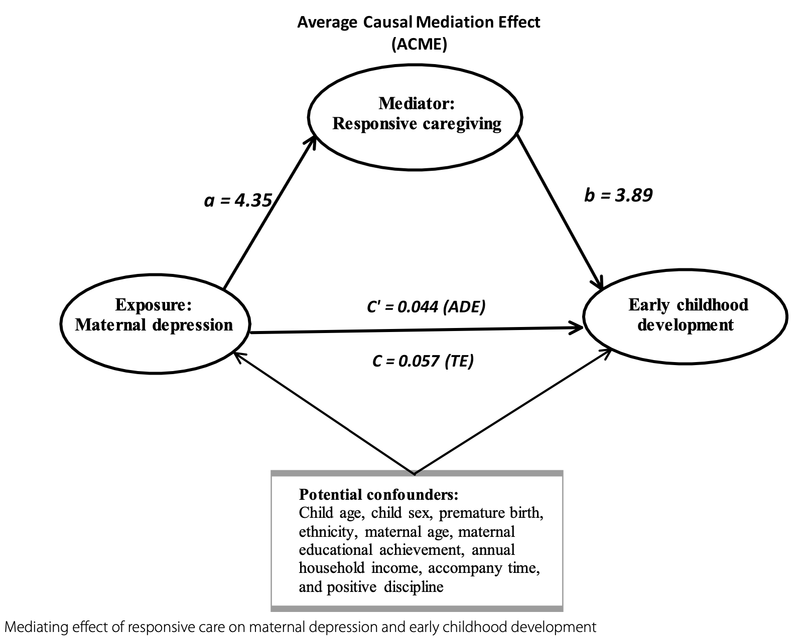
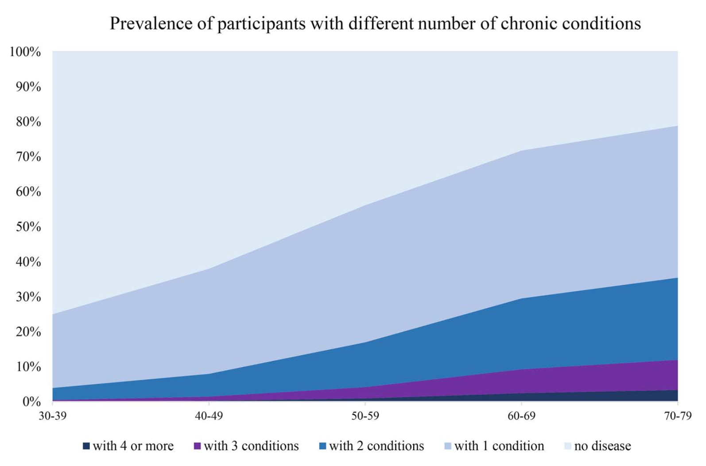

BIOGRAPHY
Welcome to Siyu Zou’s personal webpage. I’m excited to share my academic journey with you!
I am currently pursuing a Master’s degree in Epidemiology at Johns Hopkins University (since 2023), under the supervision of Professor Lawrence Appel and Kunihiro Matsushita.
As a graduate research assistant working with Dr. Matsushita, I focus on using Coronary Artery Calcium to predict the incidence risk of Cardiovascular Diseases.
Before this, I served as a full-time research assistant with Professor Kun Tang at Tsinghua University (2022-2023), where I published five first-author papers in journals, such as Public Health, International Health, Journal of Public Health, BMC Health Services Research and BMJ sexual & reproductive health.
My academic journey began with an MBBS degree (2017-2022) from Peking University, where I worked under the mentorship of Professor Hong Zhou and published several papers in journals like Annals of General Psychiatry, European journal of nutrition and PLoS Medicine.
To learn more about my research output, please visit my ResearchGate profile.
RESEARCH INTERESTS (More)
I am motivated to develop effective and timely strategies, such as dietary interventions, for the prevention and control of cardiovascular disease (CVD), particularly among vulnerable populations.
My interests also include the integration of health indicators (e.g., BMI, blood pressure, heart rate), biomarkers, CVD-related diseases (e.g., stroke, coronary heart disease, heart failure), and omics approaches (e.g., metabolomics, metagenomics, GWAS).
Additionally, I am keen to explore advanced statistical and machine learning methods, such as deep learning, to predict CVD risk.
CURRENT PROJECTS (More)
Effect of Dietary Pattern and Sodium on Blood Pressure Variability: Results from the DASH and DASH-Sodium Trial Siyu Zou, supervised by Prof. Lawrence Appel Submitted abstract to the American Heart Association’s EPI|Lifestyle Scientific Sessions 2025 |
|
Calcified Coronary Plaque Number and Risk of Incident Cardiovascular Disease in the 75-and-Older Population: The Atherosclerosis Risk in Communities (ARIC) Study Siyu Zou, supervised by Prof. Kunihiro Matsushita Presented abstract poster at the American Heart Association’s annual Scientific Sessions 2024 |
|
Predictors of Coronary Artery Calcium Distribution in Older Adults Aged >75 Siyu Zou, supervised by Prof. Michael J. Blaha Presented abstract poster at the American Heart Association’s annual Scientific Sessions 2024 |
SELECTED PEER-REVIEWED ARTICLES (More)
|  | Maternal depression and early childhood development among children aged 24-59 months: the mediating effect of responsive caregiving [DOI] Siyu Zou, Xinye Zou, Ruolin Zhang Annals of General Psychiatry. 2024;23(1) (Q1) |
| Association of multimorbidity of non-communicable diseases with mortality: a 10-year prospective study of 0.5 million Chinese adults [DOI] Siyu Zou, Zhicheng Wang, Maria Bhura, Kun Tang Public Health. 2022;205:63-71 (Q1) |
|
|  | Prevalence and associated socioeconomic factors of multimorbidity in 10 regions of China: an analysis of 0.5 million adults [DOI] Siyu Zou, Zhicheng Wang, Maria Bhura, et al Journal of Public Health. 2020;44(1):36-50 (Q1) |
Understanding the context of healthcare utilisation for children under-five with diarrhoea in the DRC: based on Andersen behavioural model [DOI] Siyu Zou, Xinran Qi, Keiko Marshall, et al |
|
Association of lifestyle factors with multimorbidity risk in China: A national representative study [DOI] Xinye Zou, Siyu Zou, Ruolin Zhang, et al |
TEACHING EXPERIENCE
| Statistical Concepts in Public Health 2 Graduate Teaching Assistant 08/2024 - Present |
|
Methods for Clinical and Translational Reasearch Graduate Teaching Assistant 05/2024 - 07/2024 |
|
Application of SPSS in Medical Statistics Teaching Assistant 09/2020 - 12/2021 |
HONORS & AWARDS
| Excellent Youth Award of Tsinghua University (0.1%) “Future Medical Star” Award of Peking University (0.1%) The First-class Scholarship for Outstanding Students (1%) Merit Students Award, Peking University (5%) |
2022 2021 2021; 2020; 2019 2021; 2020; 2019 |
EDUCATION
| Johns Hopkins University, MHS (Epidemiology) 08/2023 - Present |
|
Peking University, MBBS (Preventive Medicine) 09/2017 - 06/2022 |